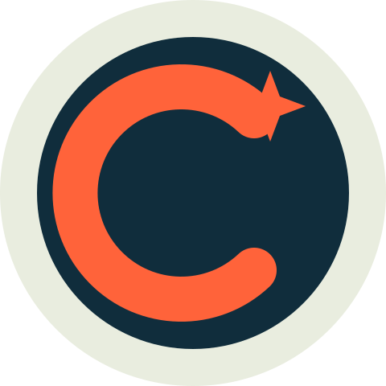
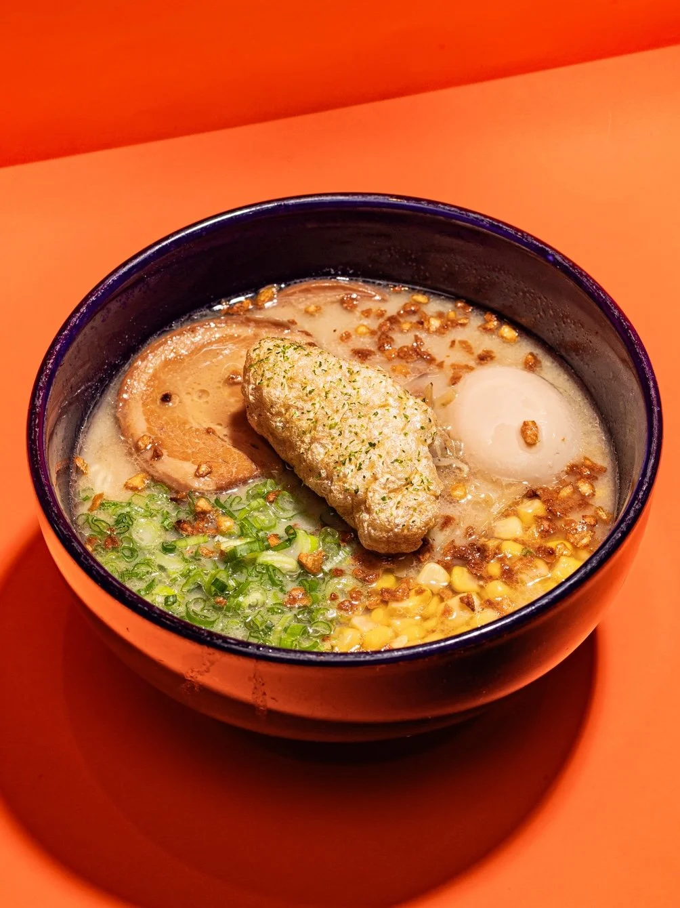

COURSEWORK / DIGITAL MARKETING
Hi, I’m
Connor.
This is my space for digital marketing projects. I’m exploring how client context, creative ideas and useful interactions come together on the web.
Explore my work ↘
01 / ABOUT
Learning by making.
This portfolio brings together my MKTG 2241 creative application work at Fairfield University. For the client project, I focused on Mecha Noodle Bar in Fairfield and a campaign idea centered on weekday meals for students and local residents. The website translates that brief into food discovery, clear directions and a simple interactive plan.
02 / SELECTED PROJECT
From a brief to a browser.

MKTG 2241 · CLIENT WEBSITE
Mecha Noodle Bar
Fairfield
An educational adaptation of an interactive React website. Real food photography, a food-mood selector and a weekday planner bring the campaign idea to life.
Created for educational purposes. This project is independent of Mecha’s official website.
View the interactive project ↗03 / AROUND THE WEB
Code and client inspiration.
GitHub links to my profile. Client Instagram links to Mecha Noodle Bar’s account, where you can explore the business behind the coursework.